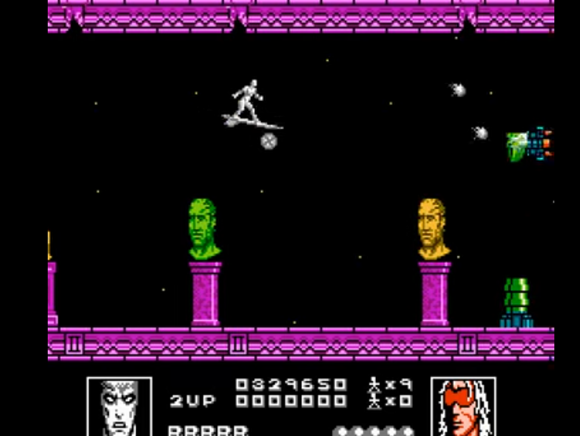

Introduction
Where to start with this one, this particular game takes "difficult" to an entirely new level, in short, it would be easier to get Donald Trump to write a Tweet with a modicum of intelligence than to complete this game (Without cheating, of course) The notoriously incredible difficulty of this game has given it something akin to a cult following. It genuinely feels nothing short of a miracle that this game passed quality control back in 1990
Gameplay
Like in the Mega Man series, you are presented with a stage select menu,
so you are able to explore more than one level of the game at least, there are 5 stages with multiple sections
with a boss at the end of each stage, plus one final stage after completing all five sections,
the major problem, however, is that it's almost impossible to complete even one section of a stage
(I managed to complete a total one section without cheating) You get a grand total of one hit point,
yes, you read that right, if you are hit once, you die and lose a life, and the fun doesn't stop there,
it's not just the enemies and their projectiles you have to avoid being hit by, just so much as
touching the wrong part of the scenery can kill the almighty Silver Surfer, every enemy in the game literally has more health than you do.
There are two types of levels, the side scrollers and the overhead levels, the overhead levels
are undeniably the more difficult of the two, as the movement of silver surfer feels more rigid and it's
much harder to determine which parts of the scenery you can touch without dying.

Gameplay continued
Through the use of cheats, I was able to complete the game, it is your typical shoot-em-up and is obviously aimed a fans of the Marvel comics, so there's nothing too special really, this could have been fairly good, except it has now gone down in history as one of the most unnecessarily difficult games ever made, this may be up there with the likes of Battletoads, yes, really.
Verdict
Whilst I can appreciate games in the late 80s and early 90s were more challenging to compensate
for relatively short overall length and smaller amount of content, but this game took it way too far.
When it's near impossible to even complete one level, you know something has gone seriously wrong.
The relentless difficulty harms the overall verdict severely, but the funky music and cool graphics earn it a point.